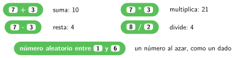
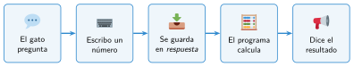

El programa calcula
🤔 Pienso5 min
Qué hago aquí: Piensa un momento y contesta con lo que ya sabes. No pasa nada si no lo sabes: es para empezar.
Calcula: 12 + 8 5· 4 20 : 4
📖 Leo y aprendo15 min
Qué hago aquí: Lee despacio, mira los dibujos y los ejemplos, y quédate con la idea clave del final.
Los bloques verdes de Operadores hacen cuentas. Son redondos porque dan un resultado. Ese resultado se mete en el hueco de otro bloque.


Para pedir un dato se usa preguntar … y esperar (azul claro). Lo que escribes se guarda en el bloque respuesta.
✏️ Hago25 min
Qué hago aquí: Haz las actividades en orden. Empieza siempre por las básicas.
Monta la calculadora y pruébala con 5 y 7. ¿Qué dice el gato?
¿Qué resultado da cada bloque?
(9) + (6)(9) * (2)(9) / (2)(9) - (12)
Haz un dado: al pulsar la barra espaciadora, el gato dice un número al azar del 1 al 6.
Cambia la calculadora para que diga también la resta y la multiplicación.
🚀 Amplío (si quieres saber más)
Qué hago aquí: ¿Has terminado? Lee la curiosidad o elige el reto. Es voluntario.
Pide un número de minutos y di cuántas horas y minutos son. Por ejemplo, 135 minutos son 2 horas y 15 minutos. Pista: suelo y mod.
✅ Compruebo5 min
Qué hago aquí: Contesta sin mirar la ficha y marca cómo lo llevas.